채널: 레디포그로스 (Ready For Growth) | 길이: 15:17 | 날짜: 2026-01-13
글림프(glymphatic) 시스템이다. 영상은 깨어 있는 동안 뇌 활동으로 생기는 부산물(베타 아밀로이드, 타우 단백질)이 깊은 수면에서만 본격적으로 씻겨 나간다고 설명한다. 특히 2013년 마이켄 네더가드 팀의 발견과 “깊은 수면 시 뇌세포 약 60% 수축”이라는 수치를 핵심 근거로 제시한다.10-3-2-1 루틴(자막상 13 2 1 언급 후 내용은 10/3/2/1로 설명), NSDR을 통해 강제로 뇌를 휴식 모드로 전환하라고 제안한다. 핵심은 “좋은 습관”이 아니라 “거부 불가능한 시스템”이다.정신 선명도 × 집중 품질 × 의사결정 정확도로 재정의한다. 수면은 자기관리 항목이 아니라 성과 엔진의 정비 프로토콜이라는 게 최종 주장이다.발표자는 먼저 수면 시간을 묻다가 즉시 질문을 바꾼다. 핵심은 “몇 시간 잤는가”가 아니라 “아침에 머리가 맑았는가”이며, 몸 상태를 진흙탕 바퀴 비유로 생생하게 전달한다. 이어 “성공하려면 잠을 줄여야 한다”는 낡은 근성론을 위험한 착각으로 규정하고, 지금 그 착각을 깨겠다고 선언한다.
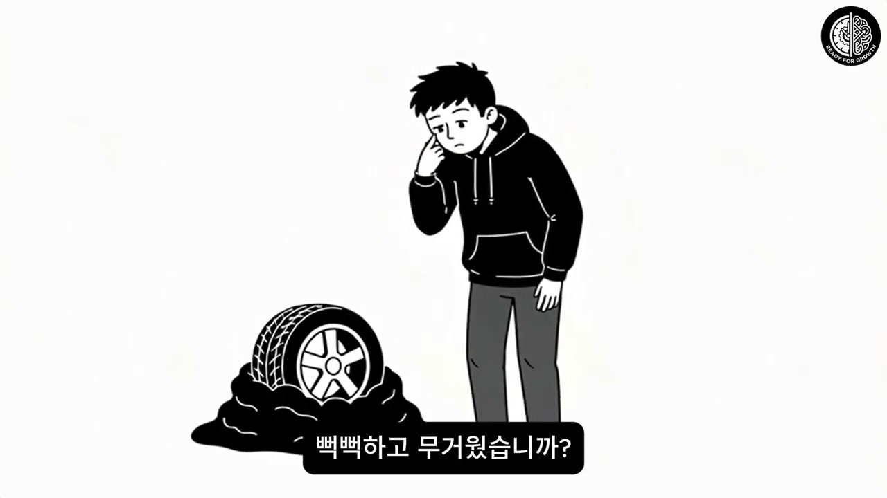
화면에는 진흙에 박힌 바퀴와 피곤한 표정의 인물이 등장해 ‘뻑뻑함·무거움’ 상태를 시각화한다. 흑백 단순 그래픽으로 메시지 집중도를 높이고, 우상단 채널 로고가 고정 배치된다.
사회가 수면 박탈을 미화한다는 비판이 이어진다. “잠은 죽어서 자라”, “4시간 수면 + 새벽 기상” 같은 문화가 성공의 필수처럼 포장되고, “어제 3시간밖에 못 잤다”는 말을 은근한 존경으로 소비하는 사회심리를 지적한다. 마지막 문장 “과연 그럴까?”는 본격 반박의 전환점이다.
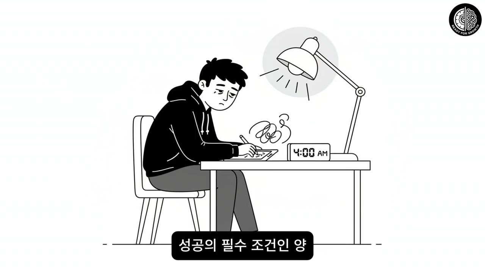
이미지에는 4:00 AM 시계와 지친 채 책상에 앉은 인물이 나온다. 새벽 생산성 신화를 ‘피로한 현실’로 반전시키는 구도다.
여기서 톤이 더 강해진다. 발표자는 “잠 줄이고 일하는 건 열정이 아니라 생물학적 자해”라고 단언하며, 뇌에 독성 폐기물을 쌓아두는 행위라고 말한다. 또한 “이건 비유가 아니라 의학적 팩트”라고 못 박아, 감성 위로가 아닌 생물학적 경고로 포지셔닝한다.
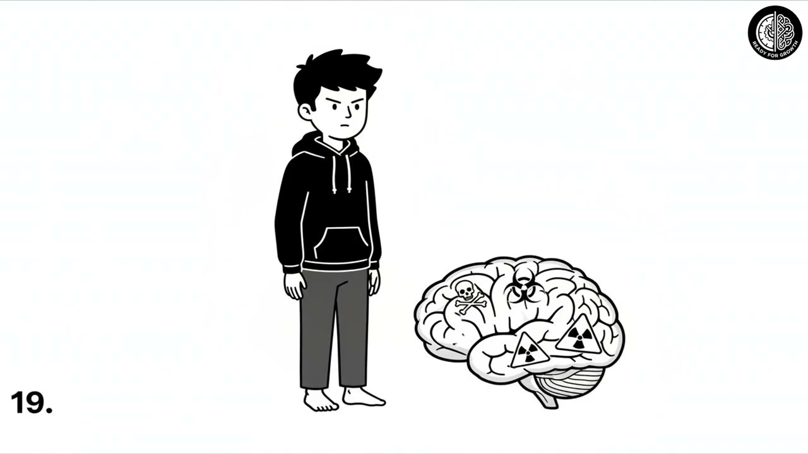
화면에 Alzhemer 경고 표지판이 함께 배치되어 수면 부족의 장기 리스크를 직접 연결한다. 하단 자막은 “즉 치매의 주범입니다.”를 강조한다.
이 구간은 영상 전체 정의문에 가깝다. “잠은 휴식이 아니라 밤마다 수행되는 생존 세척 작업”이라는 재정의가 제시되고, 끝까지 들으면 잠을 줄일 생각 자체를 못 하게 될 것이라 예고한다. “준비됐습니까?”라는 질문으로 실천 파트 진입 전 몰입을 끌어올린다.
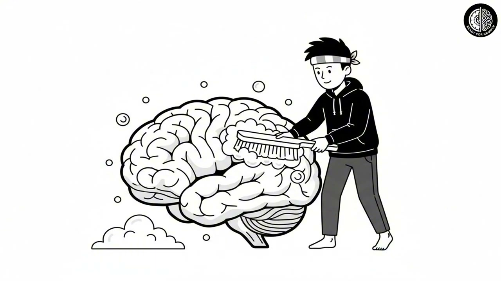
뇌에 독성·위험 아이콘(해골, 생물위해, 방사능)이 그려져 있고, 인물이 이를 마주보는 장면이다. 시각적으로 “내부 오염” 프레임을 고정한다.
깨어 있는 동안의 뇌 활동(생각·의사결정·스트레스)에는 큰 에너지 비용이 들고, 필연적으로 부산물이 생긴다고 설명한다. 그중 대표적·위험한 단백질로 베타 아밀로이드와 타우를 지목한다. 자동차 배기가스 비유로 “활동 = 배출” 구조를 직관화한다.
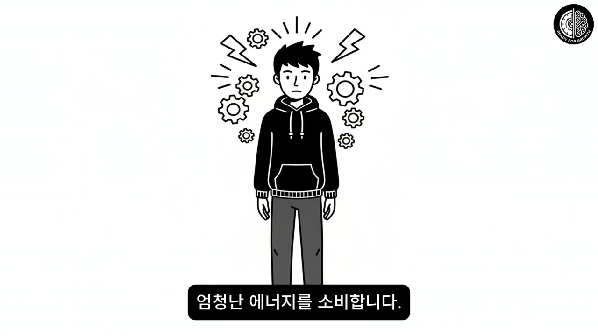
인물 머리 주변에 톱니·번개 아이콘이 배치되어 에너지 소비를 표현한다. 하단 자막은 “엄청난 에너지를 소비합니다.”로 요지를 압축한다.
이 단백질 찌꺼기가 누적되면 신경신호 전달이 방해되고, 장기적으로 뇌세포 손상·사멸로 이어진다고 말한다. 발표자는 이를 알츠하이머(치매)와 연결하며, 핵심은 “쓰레기 존재 자체”보다 “청소 타이밍”이라고 전환한다. 다른 장기는 림프관으로 실시간 배출하지만, 뇌는 두개골 내부와 혈뇌장벽 구조 때문에 동일 방식이 어렵다는 점을 강조한다.
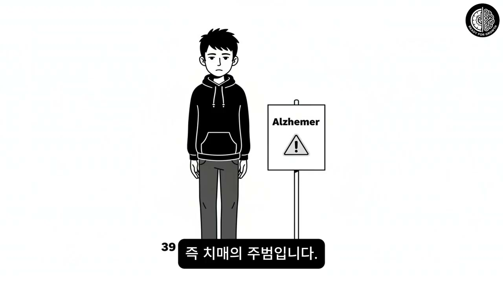
거대한 뇌를 솔로 닦는 이미지가 ‘뇌 청소’ 개념을 직관화한다. 세척 거품 요소가 들어가며, 추상 개념을 생활 이미지로 번역한다.
“그렇다면 뇌는 언제 청소하나?”라는 질문 뒤, 2013년 발견으로 큰 전환이 생긴다. 로체스터 의과대학 마이켄 네더가드 팀의 글림프 시스템이 소개되고, 작동 원리의 핵심 수치로 “깊은 수면 시 뇌세포 약 60% 수축”이 제시된다. 영상의 과학 파트에서 가장 중요한 데이터 앵커다.
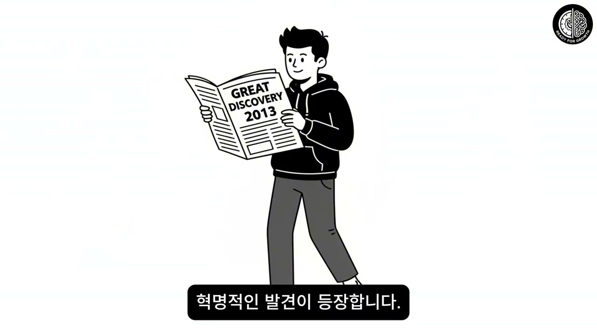
신문 제목 GREAT DISCOVERY 2013가 화면 중심 텍스트로 등장한다. “혁명적 발견” 프레이밍을 시각적으로 강화한다.
뇌세포가 줄어들며 생긴 틈으로 뇌척수액이 고압으로 유입되고, 뇌 구석구석을 쓸어 독성 폐기물을 간으로 보낸다고 설명한다. 발표자는 이를 “고압세척기”에 비유한다. 이어 “잠을 안 잔다 = 쓰레기 찬 집에 청소부는 안 부르고 쓰레기만 추가”라는 강한 비유로 행동 결과를 명확화한다.
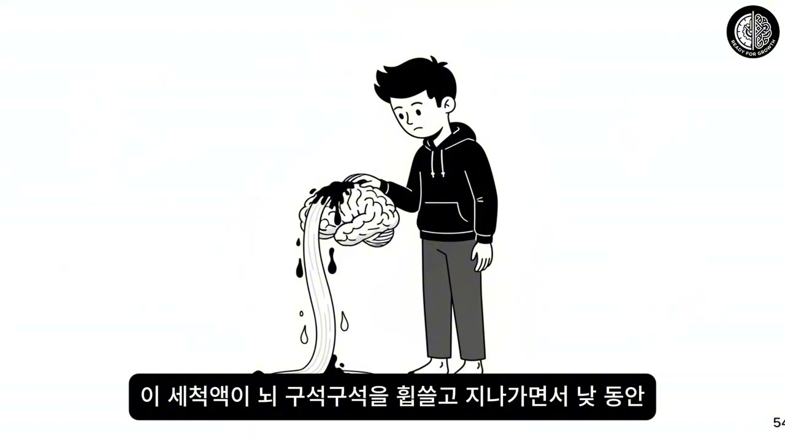
이미지에서 뇌가 오염액을 배출하는 장면이 등장해 ‘세척 후 배출’ 과정을 한 컷으로 전달한다. 장면 자체가 유체 흐름(청소 작동)을 시각적으로 설명한다.
글림프 시스템은 깊은 수면(비렘)에서만 작동하고, 각성 상태에서는 스위치가 꺼진다고 못 박는다. 그런데 사람들은 “지금 성공해야 하니까”라는 이유로 이 청소 시간을 줄인다고 비판한다. 결국 수면 단축은 작업시간 확보가 아니라 뇌 유지보수 포기라는 메시지다.
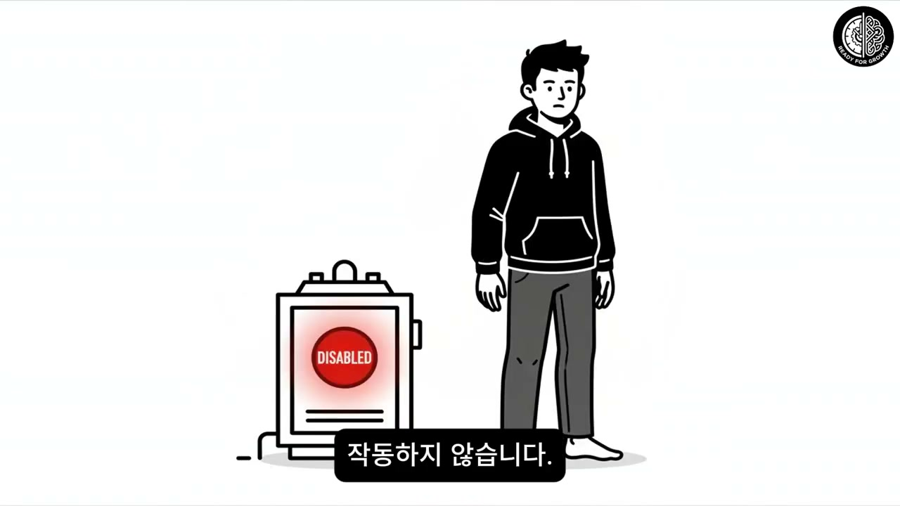
DISABLED가 적힌 빨간 비활성 버튼이 시각 중심이며, 시스템 오프 상태를 직관적으로 보여준다. “작동하지 않습니다” 자막과 이미지가 정확히 합치된다.
5시간 만에 강제 기상하는 행동을 “세탁기 헹굼·탈수 전에 전원 끄고 젖은 옷 입고 나가는 것”에 비유한다. 그래서 멍함, 집중력 저하, 감정 조절 실패가 생기는 건 이상 현상이 아니라 당연한 결과라고 말한다. 이어 매튜 워커(UC 교수)와 저서 『우리는 왜 잠을 자는가』를 권위 근거로 인용한다.
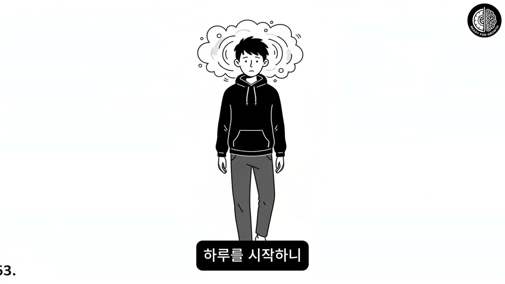
머리 위 혼탁 구름을 달고 걷는 인물이 “인지 탁함”을 상징한다. 자막 “하루를 시작하니”와 맞물려 ‘출근/일과 시작 시점의 성능 저하’를 강조한다.
직접 인용 형태로 “수면은 사치품이 아니다, 타협 불가한 생물학적 필수품이며 생명 유지 장치”가 제시된다. 이어 “나는 생각이 많아 잠을 못 잔다”는 자기설명을 변명 가능성으로 점검하라고 촉구한다. 영상은 특히 MBTI의 M 성향(영상 자막 표기), 직관 발달형, 예민한 기질 집단에 과잉사고자가 많다고 말한다.
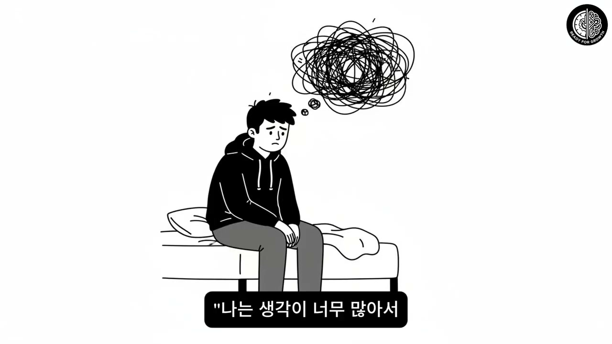
침대에 앉아 머리 위에 복잡한 낙서 구름이 떠 있는 장면으로 ‘과잉사고형 불면’을 직접 시각화한다. 자막 문장도 “나는 생각이 너무 많아서…”로 시작한다.
이 구간은 악순환 도식의 핵심이다. 과열된 뇌는 잠들기 어렵고, 잠을 못 자면 뇌 청소가 안 되며, 청소가 안 되면 전두엽 기능이 떨어져 불안 통제가 더 어려워진다는 순환을 제시한다. 결과적으로 만성 불안과 저조한 실행력이 성격 결함이 아니라 상태 문제일 수 있다고 결론짓는다.
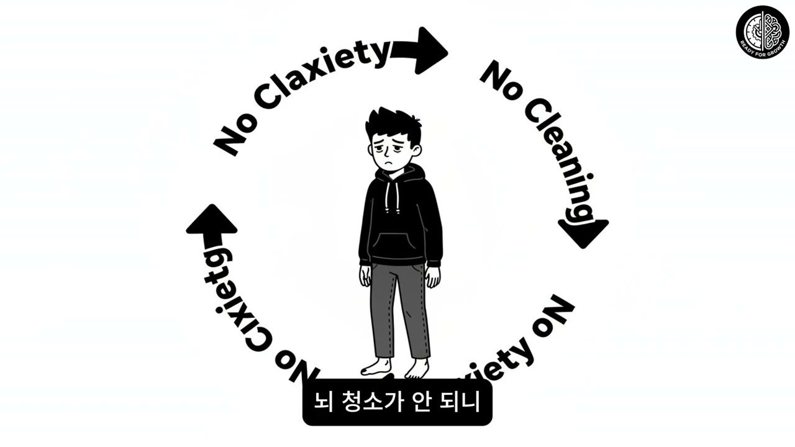
사람 주변을 도는 순환 화살표와 영어 문구(No Cleaning, No anxiety 등, 오탈자 포함)가 악순환 구조를 명시한다. 구조적 문제임을 텍스트-도형으로 동시에 전달한다.
“당신 뇌가 더러워졌을 가능성”이라는 강한 표현으로 개인 비난 대신 시스템 진단으로 이동한다. 깨끗하지 않은 엔진으로 레이싱하는 비유, “잠 줄여 시간 번 게 아니라 각성 시간의 질을 판 것”이라는 메시지가 이어진다. 결론은 ‘시간 총량’보다 ‘정신 선명도 기반 몰입 품질’이 생산성을 좌우한다는 주장이다.
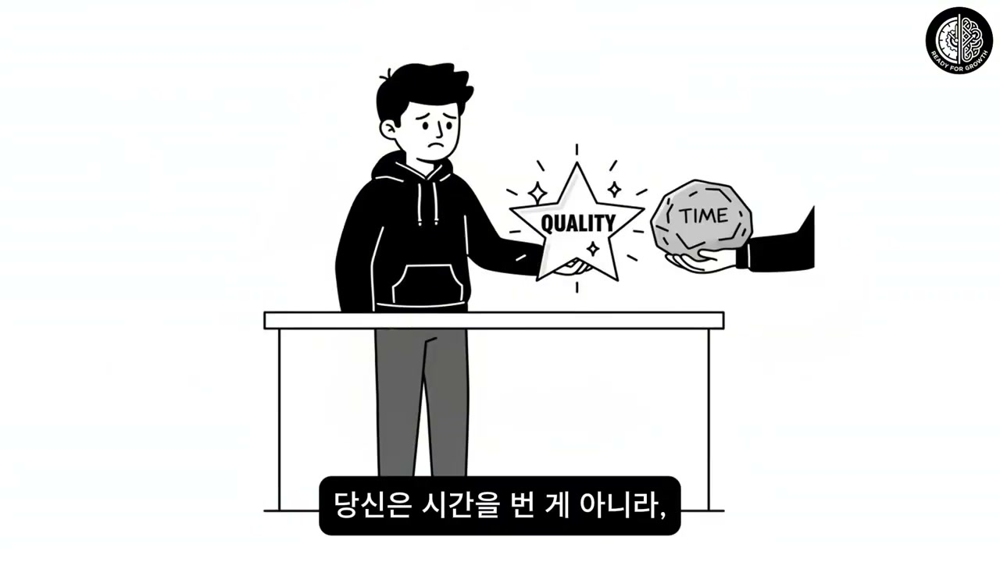
QUALITY 별을 건네고 TIME 돌을 받는 시각 장면이 나온다. 영상의 핵심 프레임(시간 vs 품질 교환)을 가장 직접적으로 도해한다.
발표자는 “왜 밤만 되면 스마트폰·넷플릭스로 취침을 미루는가”를 묻고, 이를 반복적 보복성 취침 미루기로 규정한다. 해결책은 잔소리성 조언이 아니라 매일 밤 뇌를 오버홀해 다음 날 퍼포먼스를 보장하는 설계라고 한다. 특히 생각이 많아 실행이 어려운 시청자를 직접 타깃팅한다.
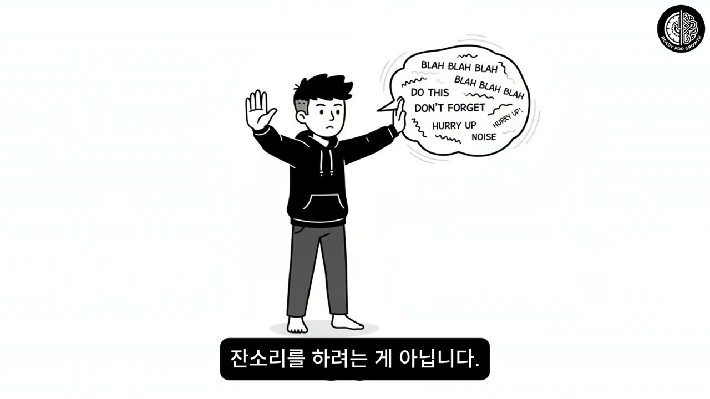
말풍선 안에 DO THIS, DON'T FORGET, HURRY UP, NOISE, BLAH BLAH 등이 빽빽하게 적혀 있다. 내적 소음 과다 상태를 텍스트 밀도로 표현한 장면이다.
여기서 실행 파트가 공식 선언된다. “뇌과학 검증 수면진입 프로토콜 + MBTI 유형별 전략”이 준비됐다고 제시하고, 전부 의지력과 무관한 환경 설정 영역이라고 강조한다. 뇌가 거부할 수 없게 강제 휴식 모드로 넘기는 기술이라는 표현을 사용한다.
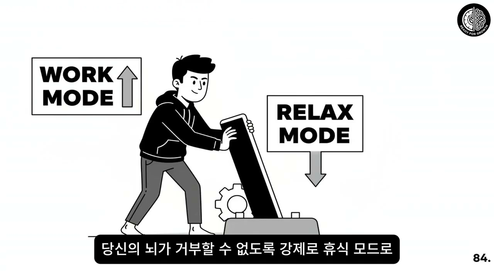
WORK MODE에서 RELAX MODE로 전환하는 큰 레버가 화면 중심이다. 추상 조언이 아니라 상태 전환 장치라는 메시지를 시각적으로 못박는다.
“1호” 전략으로 본격 실행 지시가 시작된다. 뇌에 독성 쓰레기가 쌓인다는 사실을 전제로, 청소 버튼을 확실히 누르는 생물학 기반 수면 최적화 시스템을 설계하겠다고 한다. “펜/메모 준비”를 요구하며, 따뜻한 우유 같은 느슨한 팁이 아니라는 점을 재차 강조한다.
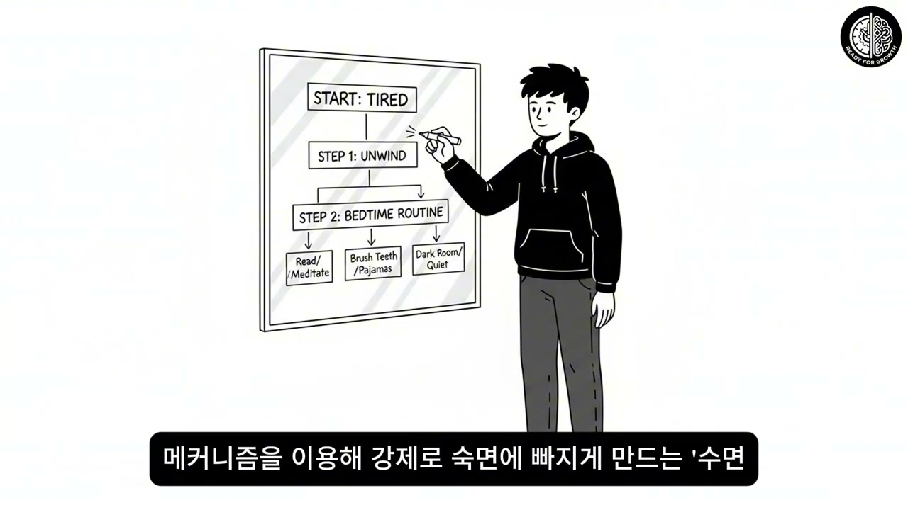
START: TIRED → STEP 1: UNWIND → STEP 2: BEDTIME ROUTINE 흐름도와 Read/Meditate, Brush Teeth/Pajamas, Dark Room/Quiet 하위 항목이 보인다. 즉시 실행 가능한 순서형 프로토콜 형태다.
전략의 권위 배경으로 “고수익 CEO·엘리트 운동선수의 생체 알고리즘”이라는 표현을 사용한다. 첫 단계는 빛 통제로 뇌 시계를 재설정하는 것이며, 앤드류 허버먼이 특히 강조하는 항목으로 기상 직후 태양광을 제시한다. 망막 특정 세포가 빛을 감지해 시교차상핵(SCN)으로 신호를 보내는 메커니즘을 설명한다.
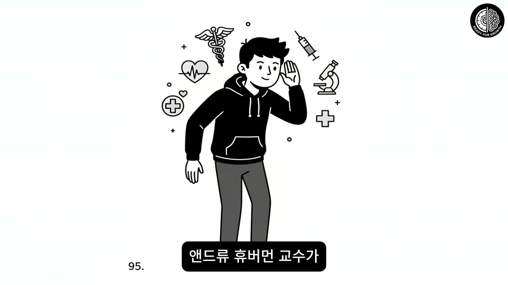
의학 상징(지팡이, 주사기, 현미경 등)과 함께 인물이 등장해 과학 근거 톤을 강화한다. 하단 자막은 “앤드류 허버먼 교수가”를 명시한다.
기상 직후 10분 야외 햇빛 노출을 구체 행동으로 제시한다. 이때 뇌가 아침으로 인식해 카운트다운을 시작하며, 정확히 14~16시간 뒤 멜라토닌 분비 타이머가 작동한다는 설명이다. 반대로 밤에는 빛 차단이 필요하고, 특히 밤 10시 이후 스마트폰 블루라이트를 핵심 방해요인으로 지목한다.
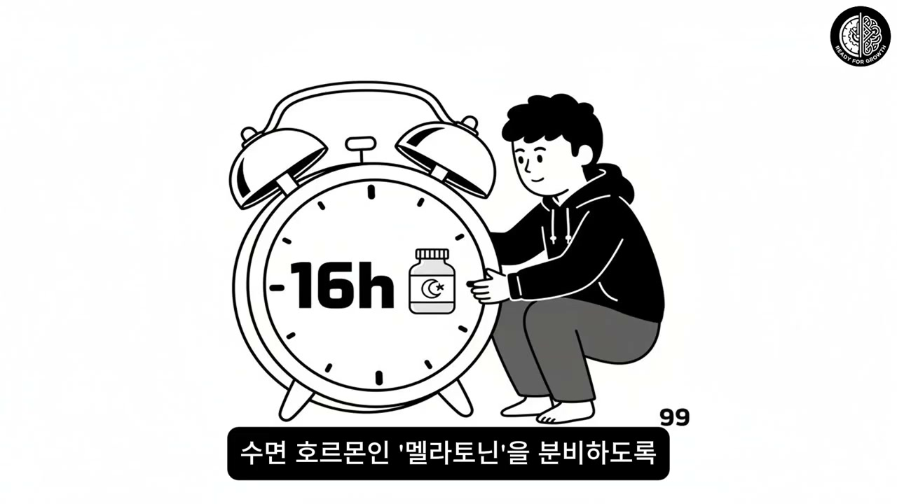
대형 알람시계 안에 -16h 표기가 있고 멜라토닌 아이콘이 함께 배치된다. “빛 입력 → 시간 지연 후 멜라토닌 출력” 구조를 하나의 상징 장면으로 제시한다.
블루라이트는 멜라토닌 분비를 억제하고 글림프 가동을 지연시킨다고 말한다. 침대 위 스마트폰 시청을 “뇌에 플래시를 비추며 자지 말라고 고문하는 행위”라는 강한 비유로 표현한다. 이어 두 번째 전략(성향별 브레인 오프)으로 자연스럽게 전환한다.
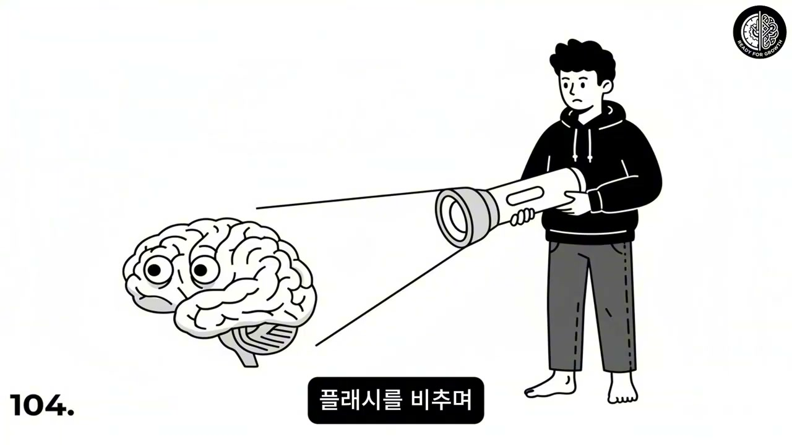
인물이 손전등으로 뇌를 비추는 직접적 은유가 등장한다. 하단 자막 “플래시를 비추며”와 시각 요소가 완전히 일치한다.
“사람마다 잠 못 자는 이유가 다르다”는 전제를 세우고 성향 맞춤 공략을 시작한다. 계획형(J)·과잉사고형(N)에게는 “내일 완벽히 해야 한다”는 압박과 머릿속 시뮬레이션이 불면의 원인이라고 설명한다. 침대에서 계획하지 말라는 이유로 작업기억 용량 한계를 제시하며, 생각을 붙들수록 과부하가 지속된다고 말한다.
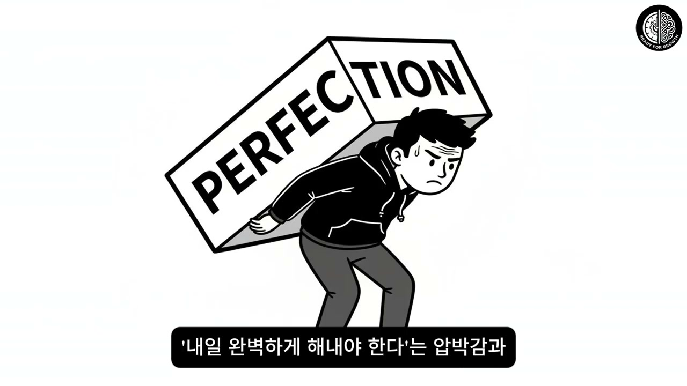
PERFECTION이라는 거대한 짐을 등에 진 인물이 묘사된다. 완벽주의 부담이 수면 진입을 짓누른다는 메시지를 시각적으로 단순화했다.
이 유형의 솔루션은 브레인 덤프다. 잠들기 전 노트에 내일 할 일, 걱정, 아이디어를 모두 적으면 뇌가 “안전 저장 완료”로 인식해 전원을 낮춘다는 설명이다. 비유는 작업관리자에서 실행 중 프로그램 강제 종료이며, 다음 대상은 충동형 P/도파민 중독형으로 전환된다.
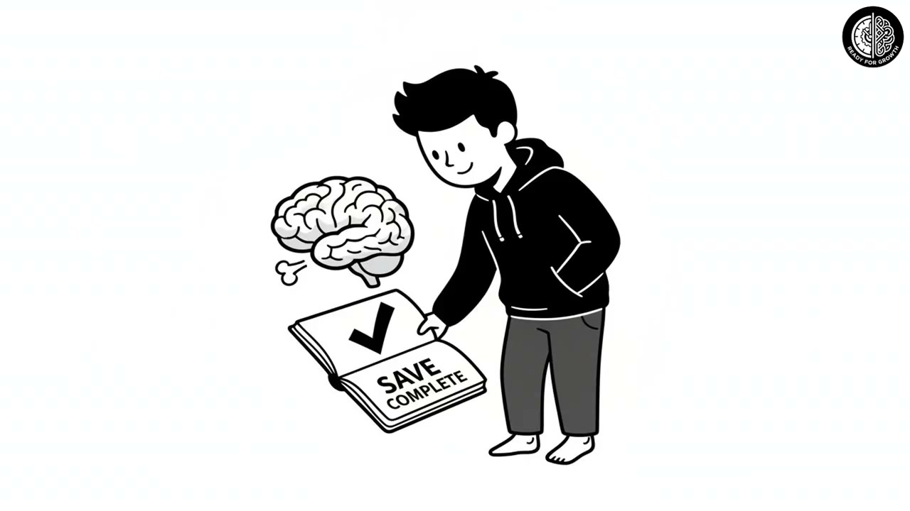
SAVE COMPLETE 체크 표시가 들어간 노트 장면이 핵심이다. 기록 행위가 인지 부하 해제 장치라는 메시지를 정확히 전달한다.
P 성향/도파민형은 걱정보다 즉시 쾌락 포기가 어려워 잠을 미룬다고 설명한다. “오늘 밤은 내 거야” 심리로 쇼츠를 넘기다 새벽을 맞는 패턴을 보복성 취침 미루기로 규정한다. 해결책은 의지 강화가 아니라 물리적 격리: 충전기는 거실, 침실 스마트폰 반입 금지다.
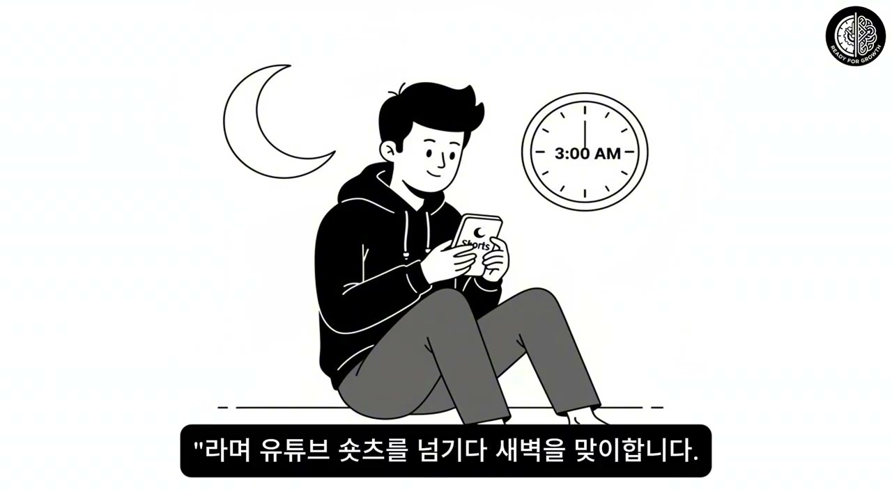
달과 3:00 AM 시계, 스마트폰(쇼츠 시청)이 함께 등장해 미루기의 실제 장면을 재현한다. 늦은 시간 도파민 소비 패턴을 한 컷으로 보여준다.
대안 행동으로 독서 1장 또는 명상을 제시한다. 침대에서 스마트폰을 쥐는 행동은 “알코올 중독자가 술병을 안고 자는 것”과 같다고 강하게 비유하며, 환경 통제 없이는 도파민 회로를 못 이긴다고 말한다. 이어 “실패할 수 없는 공식 13 2 1 법칙”을 선언하지만, 곧바로 설명되는 내용은 10시간 전 카페인 차단부터 시작해 사실상 10-3-2-1 구조로 이어진다.
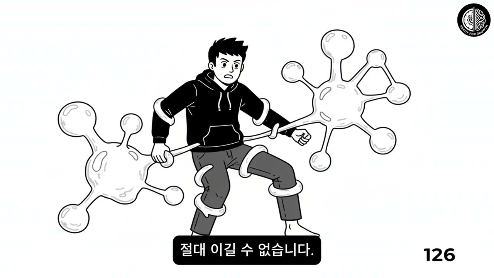
도파민(분자 형태)과 싸우는 인물 그림이 등장한다. 하단 자막 “절대 이길 수 없습니다.”가 ‘의지전의 한계’를 직접 표현한다.
구체 루틴이 제시된다. 10시간 전 카페인 차단(점심 이후 커피 제한), 3시간 전 음식 중단, 2시간 전 업무 중단, 1시간 전 스크린 차단이 핵심이며, 마지막 1시간은 독서·명상·가벼운 스트레칭으로 전환하라고 한다. 잠이 즉시 오지 않으면 억지 수면 대신 NSDR(Non-Sleep Deep Rest)를 권한다.
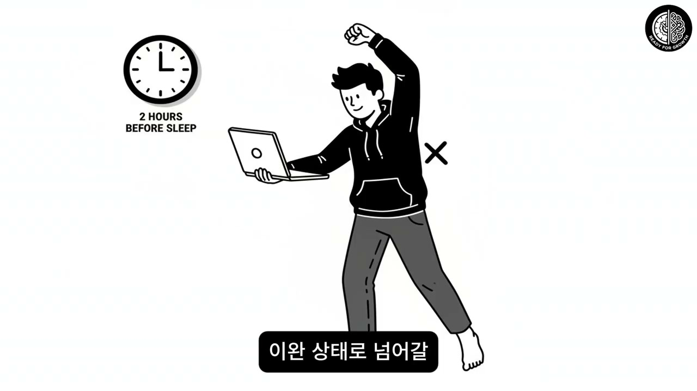
2 HOURS BEFORE SLEEP 텍스트와 노트북 사용 금지(X) 시각이 보인다. 업무 종료-쿨다운의 필요성을 장면으로 고정한다.
NSDR은 비수면 깊은 휴식으로 소개되며, 순다르 피차이도 애용한다는 사례가 제시된다. 가이드 음성에 따라 눈을 감고 호흡하면 뇌 긴장이 풀리고 수면 유사 회복 효과를 얻는다고 설명한다. 이 구간 마무리에서는 “잠은 시간 낭비가 아니라 가장 강력한 성능 개선 도구”라는 선언과 함께, 워런 버핏 비유(콜라·햄버거와 투자 성과 대비)가 제시된다.
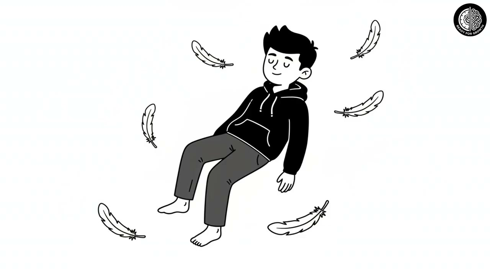
깃털 사이에 몸을 맡긴 인물로 깊은 이완 상태를 시각화한다. 자극이 아니라 안정 상태로 전환하는 NSDR 맥락과 일치한다.
제프 베조스 인용이 핵심이다. “나는 8시간 잔다. 그래야 맑은 정신으로 고품질 의사결정을 할 수 있다”는 메시지를 통해 수면-의사결정 연결을 강조한다. 영상은 맑은 정신이면 남들이 1시간 걸리는 일을 20분에 끝낼 수 있다며, 이것이 진짜 효율·생산성이라고 결론짓는다.
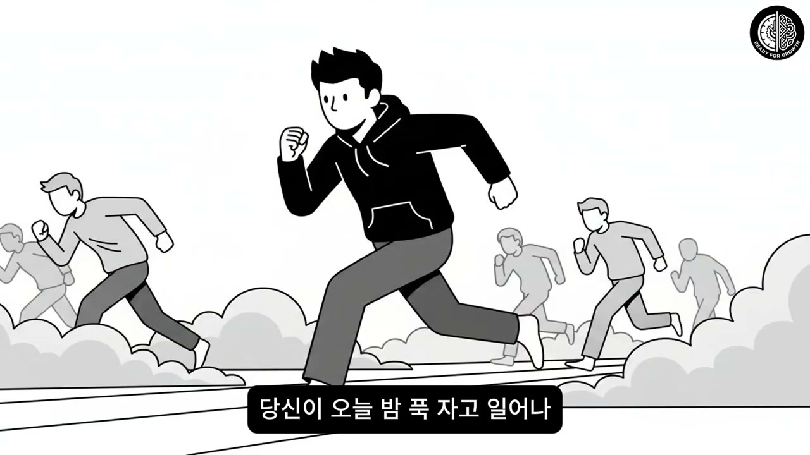
중앙 인물 양옆의 물음표는 선택·판단 상황을 상징한다. 하단 자막은 “당신의 수면을 방해하는…”으로 마지막 행동 질문으로 넘어갈 준비를 만든다.
최종 메시지는 “오늘 밤부터 죄책감 말고, 뇌를 위해 8시간 세척 시간을 선물하라”다. 깨끗해진 뇌가 부와 성공으로 이끈다는 성과 지향 결론을 제시하고, 댓글 과제를 던진다: “수면의 가장 큰 적은 무엇인지”, “오늘 밤 어떤 시스템(예: 스마트폰 격리)을 적용할지”. 선언형 참여를 변화 시작점으로 설정하며 채널 시그니처 멘트로 종료한다.
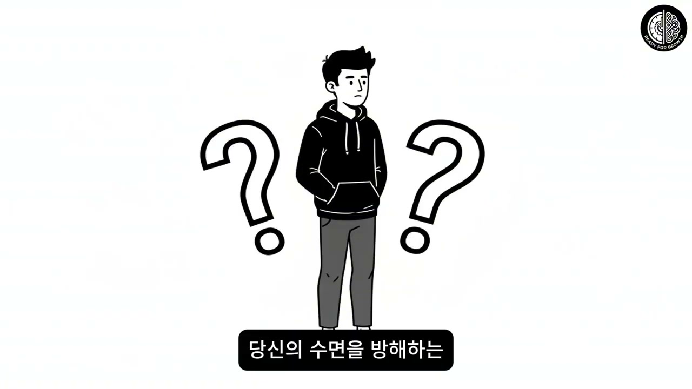
달리는 인물과 뒤처진 사람들 대비로 “수면 최적화 = 경쟁우위” 프레임을 시각화한다. 마지막 장면까지 생산성/성과 내러티브를 유지한다.
“잠을 줄여가며 일하는 건 열정이 아닙니다… 생물학적 자해에 불과합니다.”
“잠은 휴식이 아닙니다. 뇌가 밤마다 수행하는 생존을 위한 세척 작업입니다.”
“글림프 시스템은 오직 깊은 잠, 즉 비렘 수면 단계에서만 가동됩니다.”
“수면은 사치품이 아니다… 타협할 수 없는 생물학적 필수품이며 생명 유지 장치다.”
“잠을 줄여서 시간을 번 게 아니라, 깨어 있는 시간의 질을 팔아넘긴 겁니다.”
“당신에게 필요한 건 의지가 아니라 물리적 격리입니다.”
“침대 위 스마트폰은 뇌에 플래시를 비추며 자지 말라고 고문하는 것과 같습니다.”
“10시간 전 카페인 차단, 3시간 전 음식 중단, 2시간 전 업무 중단, 1시간 전 스크린 차단.”
“잠은 시간 낭비가 아니라 가장 강력한 성능 개선 도구입니다.”
“나는 8시간을 잔다… 그래야 고품질 의사결정을 내릴 수 있다.” (제프 베조스 인용)
이 영상의 핵심은 “수면은 도덕 문제가 아니라 시스템 문제”라는 전환이다. 발표자는 근성론·의지론을 버리고, 생체리듬·환경설계·행동프로토콜로 수면을 관리해야 성과가 난다고 주장한다.
실용적으로 가져갈 포인트는 세 가지다. 첫째, 아침 햇빛/밤 빛차단으로 생체시계를 고정할 것. 둘째, 성향별로 불면 원인을 분리해 브레인덤프 또는 스마트폰 격리를 적용할 것. 셋째, 10-3-2-1 + NSDR처럼 실패 확률을 낮추는 순서형 루틴을 고정할 것.
향후 관점에서 이 영상은 생산성을 ‘더 오래 일함’이 아니라 ‘더 선명하게 결정함’으로 재정의한다. 즉, 수면은 회복이 아니라 고성능 의사결정과 실행력을 위한 전날 밤의 성능 개조라는 것이 영상의 최종 메시지다.
댓글
GitHub 이슈 기반 댓글 시스템입니다.